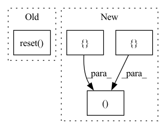

Pattern ID :18957
Before Change
:param actions: the list of actions for the respective envs.
:return: observations, rewards, dones, information-dicts all in env-aggregated form.
self.obs_aggregator.reset()
rewards, env_dones, infos, actor_dones, actor_ids = [], [], [], [], []
for i, env in enumerate(self.envs):
o, r, env_done, i = env.step(actions[i])After Change
:param actions: the list of actions for the respective envs.
:return: observations, rewards, dones, information-dicts all in env-aggregated form.
observations, rewards, env_dones, infos, actor_dones, actor_ids = [], [], [], [], [], []
for i, env in enumerate(self.envs):
o, r, env_done, i = env.step(actions[i])
actor_dones.append(env.is_actor_done())In pattern: SUPERPATTERN
Frequency: 5
Non-data size: 4
Instances Fragment ID: 61635948
Project Name: enlite-ai/maze
Commit Name: ef2dcb06f1a9bcf6bbfaf9889802bbbb1b1b608d
Time: 2021-03-25
Author: office@enlite.ai
File Name: maze/train/parallelization/distributed_env/dummy_distributed_env.py
M Class Name: DummyStructuredDistributedEnv
N Class Name: DummyStructuredDistributedEnv
M Method Name: step(2)
N Method Name: step(2)
M Parent Class: StructuredDistributedEnv
N Parent Class: LogStatsEnv,TimeEnvMixin,StructuredEnv,DistributedEnv,StructuredEnvSpacesMixin
M File Name: maze/train/parallelization/distributed_env/dummy_distributed_env.py
N File Name: maze/train/parallelization/distributed_env/dummy_distributed_env.py
M Start Line: 53
M End Line: 71
N Start Line: 52
N End Line: 69
Before Change
// initialize attention
prev_att_w_forward = None
prev_att_w_location = None
self.forward_att.reset()
self.location_att.reset()
// setup for attention constraint
if use_att_constraint:After Change
// loop for an output sequence
idx = 0
outs, att_ws, probs = [], [], []
while True:
// updated index
idx = idx + self.reduction_factor
Fragment ID: 61635944
Project Name: digitalphonetics/ims-toucan
Commit Name: 10019cc0757749a84bed3e7c9edf69ef603bf385
Time: 2021-10-14
Author: florian.lux@ims.uni-stuttgart.de
File Name: Layers/TacotronDecoder.py
M Class Name: Decoder
N Class Name: Decoder
M Method Name: inference(9)
N Method Name: inference(10)
M Parent Class: torch.nn.Module
N Parent Class: torch.nn.Module
M File Name: Layers/TacotronDecoder.py
N File Name: Layers/TacotronDecoder.py
M Start Line: 447
M End Line: 568
N Start Line: 479
N End Line: 534
Before Change
writer.add_scalar(f"train/{log_item[0]}", log_item[1], self.agent.sample_step)
def _run_evaluate(self, n_episodic: int = 1) -> None:
eval_obs = self.eval_env.reset()
sum_episodic_length, sum_episodic_return = 0.0, 0.0
cnt_episodic = 0
while cnt_episodic < n_episodic:After Change
writer.add_scalar(f"train/{log_item[0]}", log_item[1], self.agent.sample_step)
def _run_evaluate(self, n_steps: int = 1) -> None:
el_list, er_list = [], []
for _ in range(n_steps):
act = self.agent.predict(self.eval_obs)
self.eval_obs, _, _, infos = self.eval_env.step(act)
Fragment ID: 61635946
Project Name: sdpkjc/abcdrl
Commit Name: df4ac4216ac2f69a91f2b9859a4246c7ca42e02c
Time: 2022-10-21
Author: 425826492@qq.com
File Name: abcdrl/ddqn.py
M Class Name: Trainer
N Class Name: Trainer
M Method Name: _run_evaluate(2)
N Method Name: _run_evaluate(2)
M Parent Class:
N Parent Class:
M File Name: abcdrl/ddqn.py
N File Name: abcdrl/ddqn.py
M Start Line: 260
M End Line: 290
N Start Line: 267
N End Line: 298
Before Change
writer.add_scalar(f"train/{log_item[0]}", log_item[1], self.agent.sample_step)
def _run_evaluate(self, n_episodic: int = 1) -> None:
eval_obs = self.eval_env.reset()
sum_episodic_length, sum_episodic_return = 0.0, 0.0
cnt_episodic = 0
while cnt_episodic < n_episodic:After Change
writer.add_scalar(f"train/{log_item[0]}", log_item[1], self.agent.sample_step)
def _run_evaluate(self, n_steps: int = 1) -> None:
el_list, er_list = [] , []
for _ in range(n_steps):
act = self.agent.predict(self.eval_obs)
self.eval_obs, _, _, infos = self.eval_env.step(act)
Fragment ID: 61635942
Project Name: sdpkjc/abcdrl
Commit Name: df4ac4216ac2f69a91f2b9859a4246c7ca42e02c
Time: 2022-10-21
Author: 425826492@qq.com
File Name: abcdrl/dqn.py
M Class Name: Trainer
N Class Name: Trainer
M Method Name: _run_evaluate(2)
N Method Name: _run_evaluate(2)
M Parent Class:
N Parent Class:
M File Name: abcdrl/dqn.py
N File Name: abcdrl/dqn.py
M Start Line: 258
M End Line: 288
N Start Line: 265
N End Line: 296
Before Change
writer.add_scalar(f"train/{log_item[0]}", log_item[1], self.agent.sample_step)
def _run_evaluate(self, n_episodic: int = 1) -> None:
eval_obs = self.eval_env.reset()
sum_episodic_length, sum_episodic_return = 0.0, 0.0
cnt_episodic = 0
while cnt_episodic < n_episodic:After Change
writer.add_scalar(f"train/{log_item[0]}", log_item[1], self.agent.sample_step)
def _run_evaluate(self, n_steps: int = 1) -> None:
el_list, er_list = [] , []
for _ in range(n_steps):
act = self.agent.predict(self.eval_obs)
self.eval_obs, _, _, infos = self.eval_env.step(act)
Fragment ID: 61635943
Project Name: sdpkjc/abcdrl
Commit Name: df4ac4216ac2f69a91f2b9859a4246c7ca42e02c
Time: 2022-10-21
Author: 425826492@qq.com
File Name: abcdrl/ddpg.py
M Class Name: Trainer
N Class Name: Trainer
M Method Name: _run_evaluate(2)
N Method Name: _run_evaluate(2)
M Parent Class:
N Parent Class:
M File Name: abcdrl/ddpg.py
N File Name: abcdrl/ddpg.py
M Start Line: 322
M End Line: 352
N Start Line: 328
N End Line: 359